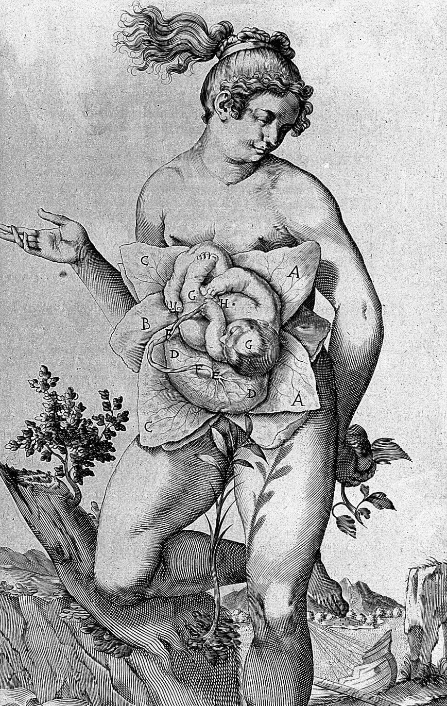

How healthy we are across the lifespan, including how well we age, depends partly on conditions before birth and in early postnatal life. That is the premise of the developmental origins of health and disease (DOHaD). I study it through the gut, where maternal exposures, the first colonizing microbes, and host development meet. The sections below follow that path in developmental order, from how maternal diet programs the fetal gut, to when colonization begins, to how a mother’s pregnancy history shapes what she transmits.
Maternal diet, the placenta, and the fetal gut
In mice, maternal high-fat diet disrupts the gut–placenta–fetus axis, and its effects on the offspring gut persist into adulthood.
My doctoral work used a mouse model of diet-induced obesity to trace how maternal diet affects the gut–placenta–fetus axis. Characterizing the maternal gut microbiome, maternal intestine, placenta, and fetal intestine in the same cohort revealed a chain running from diet to fetus: disrupted maternal intestinal adaptation to pregnancy, placental hypoxia, and altered barrier protein and immune marker profiles in the fetal gut. That chain is not visible in studies of a single compartment.
Follow-up work showed that the fetal intestinal inflammation depends on TNF signalling, and that the effects persist. In adulthood, offspring had altered gut microbiota composition, increased gut barrier permeability, and greater susceptibility to a postnatal dietary challenge.
Papers: Gohir, Kennedy et al. 2019, J Physiol · PhD thesis, McMaster University, 2021
When does microbial colonization begin?
Meconium collected before birth has no detectable microbiota, so gut colonization begins at birth.
For close to a decade, whether microbial colonization begins before birth was one of the most contested questions in microbiome science. A substantial literature reported bacterial DNA in placenta, amniotic fluid, and meconium, which would mean the fetal environment is not sterile and that microbes shape development earlier than assumed.
Most of those studies lacked the contamination controls that low-biomass samples require. When a sample contains very little microbial DNA, reagent- and laboratory-derived sequences can dominate the result while still looking biologically plausible. Through a collaboration with Charité–Universitätsmedizin Berlin, I applied contamination-aware protocols to meconium collected immediately before caesarean delivery and found no detectable microbiota. That attention to technical artefacts goes back to my MSc work, which showed that PCR amplification introduces consistent, primer- and region-dependent biases in Illumina-based 16S rRNA gene profiling.
I then re-analysed the published data behind a high-profile paper that I thought overstated the evidence for fetal microbial exposure, which became a peer-reviewed letter in Cell. The letter led to my being first author on a Nature perspective, written with 47 colleagues, that synthesized the evidence and set out principles for contamination-aware study design.
If the fetus is not colonized, any prenatal influence of the maternal microbiome has to operate through bacterial products, such as metabolites or extracellular vesicles, that cross the placenta. Which of these signals reach the fetus, and what they do to fetal development, is still largely unknown.
Parity as a modifier
Parity modifies how maternal adiposity relates to the gut microbiota in pregnancy, and the differences extend to neonatal colonization.
Pregnancy microbiome studies generally treat consecutive pregnancies as interchangeable. Yet first-born children are smaller at birth, one sign that first and later pregnancies differ biologically.
In a prospective cohort at Charité, I found that parity modifies how BMI and gestational weight gain relate to the maternal gut microbiota. Associations between excess adiposity and community composition were largely confined to first pregnancies, and multiparous participants followed different microbial trajectories. With McMaster’s Department of Mathematics and Statistics, I developed TALDA, which adapts latent Dirichlet allocation to model subcommunities of co-occurring taxa over time; in this cohort, specific subcommunities expand and contract differently in first and later pregnancies, and their postpartum recovery diverges. Pooling primiparous and multiparous participants can therefore obscure real biological signal. In neonates, delivery mode, birth order, and sex each independently shape early colonization.
In the Baby & Mi birth cohort, I am now asking how intrapartum antibiotic prophylaxis and birth order jointly shape infant microbiome development, and whether early disruptions propagate to later growth and atopic outcomes.
From early life to healthspan
The question that runs through all of this work is which early-life differences last, and which can be changed. The next step is to follow them forward, from childhood growth and allergy to gut barrier function and health in aging, and to ask where along that path prevention could start.
Early-life programming is well established as a factor in who is susceptible to diet- and lifestyle-related disease. Whether it also shapes who benefits from interventions, such as changes in diet or exercise, is largely untested, and the answer could help match prevention to the people most likely to benefit. Closer to birth, the Good Bugs Study, which I lead, asks which members of the vaginal microbiota protect mothers and newborns against Group B Streptococcus.
